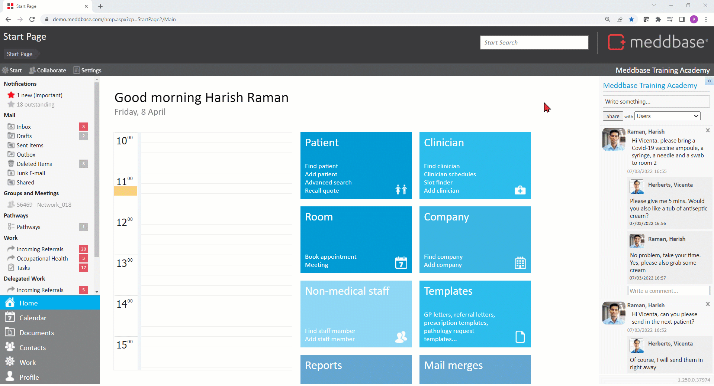

Meddbase System Administrators/Superusers with access to the Admin section of the Start Page can view and modify a host of configuration options and settings controlling the behaviour and workflows in the application. Many of the above are configured/controlled via the Configuration section*.
This article is a part of a collection of articles on the Admin > Configuration section. Click here for an overview article.
Many of the settings described in this series have default values when a Meddbase chamber is first created and do not need changing.
* Access to the Admin section and the ability to add/change configuration and settings are determined by the User's Role Group membership and Security Policy permissions granted. Please refer to the below articles for more details.
Understanding Role Groups - Definitions, related workflows and behaviours
This article is an overview of the Admin > Configuration > Accountancy section and the available settings within.
To access the Configuration section, a permitted User should:-

The below table explains each setting, field and/or tick box in detail:
| Setting | Description/effect |
|---|---|
| General accountancy | |
| Authorise purchase orders | If referral system version 1 is in use (see Admin > Configuration > Advanced), creating a new referral with some services will create a purchase order. The purchase order can be viewed by clicking on the money bag icon next to a referral, or by finding it in the Accounts > Purchase Orders view. If 'Authorise Purchase Orders' is enabled, then users will have the option to authorise/unauthorize purchase orders. |
Nominal codes | Nominal and department codes can be used to record income from specific services and appointments. (Click here for more details on adding Nominal and Department Codes) Furthermore, Nominal Codes assigned to Appointment Types and Services can be mapped to specific accounts on the chart of accounts of an accounting software, e.g. Xero. |
| Department codes | As above. |
| Default creditor (billing company) | A Company can be a Creditor on invoices if it is recorded as an 'Internal' company type. The chamber company is 'Internal' by default and typically serves as the 'Default creditor', however you can register additional 'Internal' companies and select either of them to be the 'Default creditor'. Please note! You can change the 'Default creditor' to another 'Internal' company during the appointment booking process and this is only effective in that instance. |
| Hide payment types | Meddbase has built-in payment types, i.e. Cash, Credit and Debit Card, DD etc. This option allows you to hide either of these in the chamber. When taking a payment, e.g. on an invoice, the hidden payment type will not be available for selection. (Click here for more details on hiding payment types) |
| Currency symbol | Add/change the chamber default currency symbol, e.g. £, €, $ etc. |
| Currency | Add/change the chamber default currency capitalised abbreviation, e.g. GBP, EUR, USD etc. |
| Capture diagnosis during consultation | When set to 'True' or 'Ticked', this setting adds a field to a Clinical Form allowing the Medical User to capture an Invoicing Diagnosis during a consultation. When submitting an invoice to Healthcode, where an Insurance Company is the debtor, the invoicing diagnosis captured within the consultation will be used. If this is set to 'False' or 'Unticked', the Invoicing Diagnosis field will not be visible on the Clinical Form, however the diagnosis can still be added to the submission to Healthcode. Please note! This is a part of a larger configuration process and is only one of many steps/options related to the Healthcode integration in Meddbase. (Click here for more details on Healthcode) |
| Facilities billing rule | This field allows you to set a default price per hour for sessions. This is done by selecting a Price List (or a Rule Set containing a Price List), the system will generate a default session price when you create a session. If you create a Price List and add a site with a value against it, then set that price list as the facilities billing rule, when you create a session at that site the price will default to that value multiplied by the number of hours the session is for. |
| Show all appointment types
| This setting overrides 'provide' rules for appointment types and it makes every appointment type that exists in the chamber 'provided'. This makes it possible to setup a very simple chamber where there are no billing rules. |
| Additional creditor patient charges as fee splits | If the feature is enabled, any 'additional creditor' charge that would have gone to a patient, is billed by the main appointment billing company and an additional fee split bill is raised by the additional creditor to the billing company. This only applies to charges that would have gone to the patient, so that means services where the patient is the payer OR services with an excess. For services with an excess, only the excess part is treated this way. A company debtor will still get the charges directly from the attendee's billing company. |
| Additional creditor prices can be per hour | For appointment types that are already configured with a 'price per hour', this setting controls whether that setting is also applied to additional creditor prices. (Click here for more details on appointment types)
|
| Invoice generation | This setting allows you to chose when invoices should be generated in the chamber:
|
| Allow authorisation change on sent invoices | The 'Eligibility and cases' page accessed via a Patient's Record page allows removing and authorisation from a 'Case' or changing the payer on an authorisation, which may cause appointments linked to that 'Case' to a new authorisation. Appointments can have invoices generated using an Authorisation Code (click here for details on Authorisation Codes) and some of these invoices may have already been marked as 'sent' so they can no longer be edited. This setting governs whether that update is allowed on invoices 'Marked as Sent'. |
| Default invoice matching option | This setting governs the default date used by the system when matching invoices to payments, e.g. Advance Payments:
|
External application | |
| Application | This dropdown menu is a part of a larger configuration process for the 'Accountancy Interface' integration. You can select the external application you intend to integrate your Meddbase chamber with, e.g. Xero OAuth2.0 when integrating with Xero. Click here for more details on the configuration process for the integration. |
Quotes | |
| Code prefix | This code will prefix any quote numbers. You can either use the default ‘QUOT’ or a code more relevant to your practice. (Click here for more details on the Quote System) |
| Duration in days | The number of days a quote is considered valid. Once the quote expires, it will no longer be possible to recall this quote. |
| Only valid on proposed date/time? | If checked, proposed date is recorded in the quote and the quote is only valid on the proposed date |
Only valid at proposed site? | If checked, proposed site is recorded in the quote and the quote is only valid at the proposed site. |
| Only valid with proposed attendees? | If checked, doctor attendees are recorded in the quote and quote is only valid if they attend. |
Invoicing | |
| Invoice email subject | When emailing an Invoice (Invoice > Actions > Email Invoice) the user can select the Template to be used to generate the Invoice pdf. Having selected the template, the system generates an email with the invoice attached. This field allows pre-defining the content of the subject line of that email. Please note! The subject line typically includes Template Codes, e.g. {Number}, {Debtor.FullName} (Click here for more details on invoice related Template Codes) |
| Invoice email template | This field allows pre-defining the body of the email described above. Please note! The body of the email typically includes Template Codes, e.g. {Debtor.FullName}, {Number}. Furthermore, if the Online payments feature is in use the body of the email also includes Template Codes generating payment links for the patient, i.e. {PayOnlineTextStart}, {PayOnlineBeginLink}, {PayOnlineEndLink} etc. |